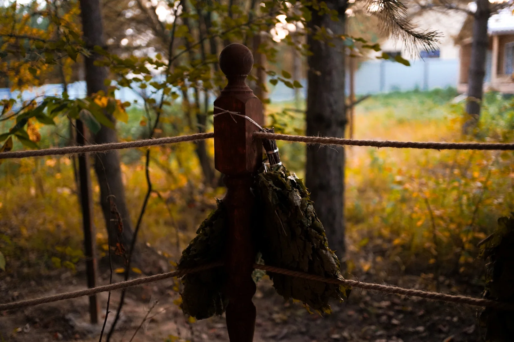
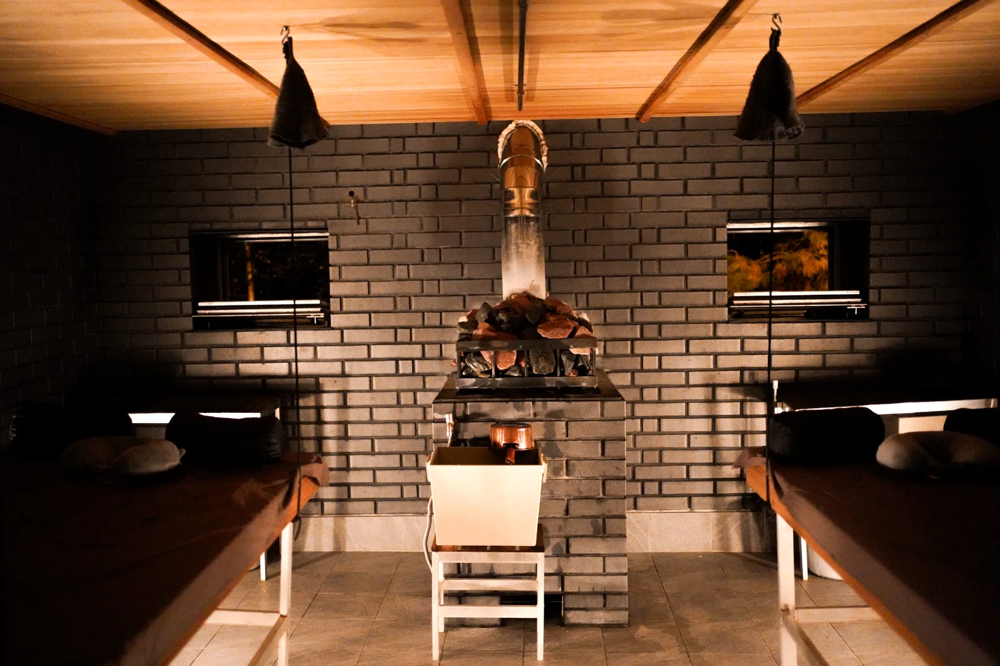
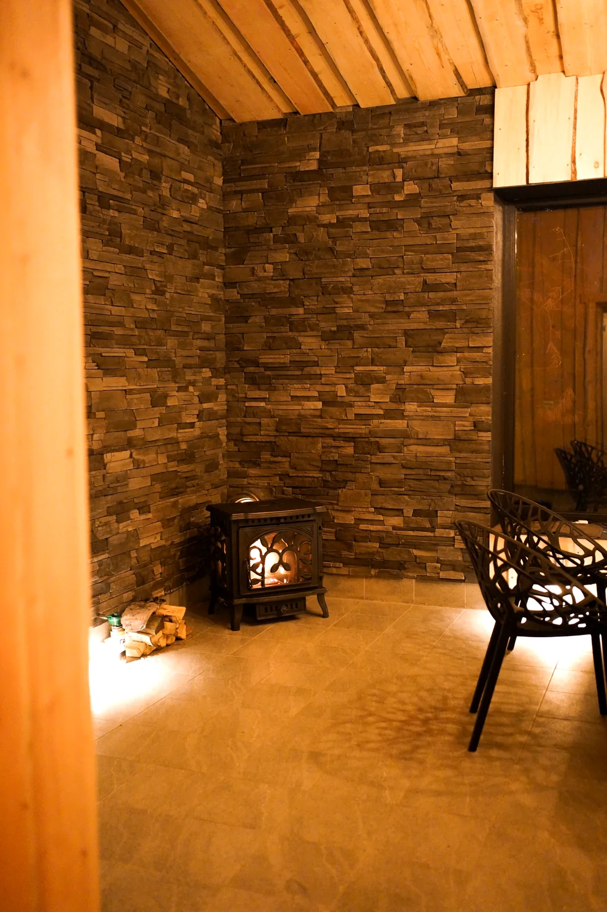
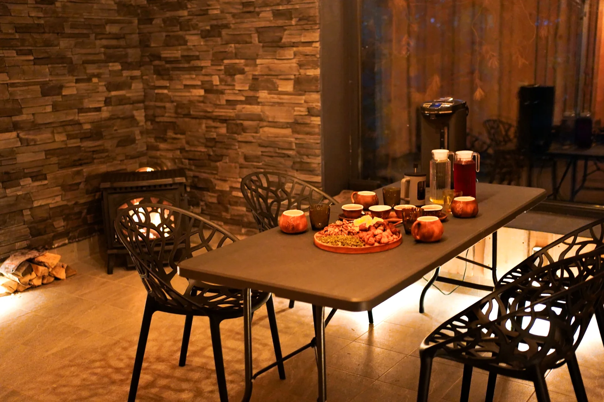

ЗНАКОМСТВОПервое знакомство
Групповой формат
Банный процесс в своей компании: кленовые веники, парение, купель и знакомство с культурой «Истоти».
4–6 мужчинОколо 1 часа парения каждому гостю
7 500 ₽за гостя
↗ПРОГРАММЫ И ЦЕНЫ
Сравните групповой формат, индивидуальное парение и обряд на целый день. В «Истоти» оплачивается банный процесс с мастером, а не почасовая аренда помещения.

ЗНАКОМСТВОПервое знакомство
Банный процесс в своей компании: кленовые веники, парение, купель и знакомство с культурой «Истоти».

ГЛАВНАЯ ПРОГРАММАОсновная программа
Встреча и чай, подготовка, 2–3 часа работы мастера на полке, отдых и спокойное завершение.

СЛЕДУЮЩАЯ ГЛУБИНАБолее глубокий опыт
Более продолжительная персональная программа с парением, водными циклами и отдыхом. Ориентир основного процесса — 3–4 часа.

ФЛАГМАНЦелый день для себя
Семь циклов по 45 минут на полке с перерывами. Длительная персональная работа в течение целого дня.
ЧТО ВКЛЮЧЕНО В СТОИМОСТЬ
Каждый формат включает заранее согласованный банный процесс, внимание мастера, приватное пространство, необходимые принадлежности и предусмотренный программой отдых. Количество гостей и длительность различаются. Для «Погружения» указано ориентировочно 2–3 часа работы на полке и 4–5 часов всего визита. Для семичасового парения — семь циклов по 45 минут с паузами и 8–9 часов общего процесса.